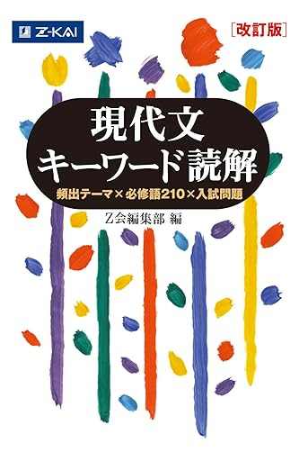

読んでいただき、ありがとうございます。
この度、筑波大学情報学群情報科学類の一般入試(前期日程)に合格しました。
合格体験記を執筆するにあたり、特に再現性の高い「参考書の使い方」 を主軸にお伝えしたいと思います。
私は予備校に通っておらず、参考書学習をメインで受験勉強を行なっていました。
また私は過年度生であったため、共通テストでは経過措置（旧課程での受験）を利用していました。そのため、2025年受験の現役生/来年以降の受験生とは若干学習内容が異なる点があることを、あらかじめご了承ください。
目次
受験科目と教科ごとの点数
共通テスト
国語(現古漢) 178/200
旧数学Ⅰ・旧数学A 89/100
旧数学Ⅱ・旧数学B 93/100
物理(旧課程) 74/100
化学(旧課程) 70/100
英語リーディング 160/160
英語リスニング 33.2/40
旧倫理、政治・経済 66/100
情報Ⅰ 98.25/100
共通テスト合計 861.45/1000
2次試験[特典開示が来たら追記予定]
数学 700点
理科(物理、化学) 500点
英語 400点
2次試験合計 1600点
総合点 2600点(共通テスト比率38.5%)
共通テストについては、英語リーディングを1.6倍、英語リスニングを0.4倍、情報Ⅰを 75+(獲得点数)×0.25 として計算することに注意が必要です。 (また、情報Ⅰの点数補正は来年以降も段階的に変更するようです。)
2次試験については、数学の配点がとても高いです。2次数学の出来が合否に最も大きく影響すると思います。(これについては後にも書いています。)
国語
使用した参考書
センター試験/共通テスト過去問 2009-2024(16年分)
2025共通テスト総合問題集 国語
2025-大学入学共通テスト実戦問題集 国語
Z会 現代文キーワード読解
現代文 読解の基礎講義
読んで見て覚える 重要古文単語315
ステップアップノート３０ 古典文法基礎ドリル
はじめの一歩 古文読解問題集
古文必修問題集 演習編 (*途中まで)
漢文早覚え速答法 共通テスト対応版
難関大突破 新漢文問題集 (*途中まで)
Z会 現代文キーワード読解
現代文単語帳です。評論文/小説に頻出の単語の説明が網羅されています。
語彙力に不安がある人は、やると不安が払拭されると思います。自信がある人も、確認として1冊手元にあってもいいと思います。
1周目で知らない単語を付箋を貼ってリストアップして、その部分だけ何回か周回しました。
現代文 読解の基礎講義

有名予備校講師の中野芳樹さんという方が執筆された本です。主に、実践演習を通しながら現代文文章の「読み方」を訓練する本です。
「どのような表現が出てきた時に、どのようなことを考える/メモの仕方をすべきか」のようなことが詳しく説明されています。
個人的な意見ですが、この本に書かれたやり方を参考にしつつも、それをマイナーチェンジして自分なりに納得のいくやり方を身につけるのが最も良いと思います。
私はそのようにすることで、評論文2ミス、小説0ミス、実用文0ミスまで上げることができました。
読んで見て覚える 重要古文単語315
古文読解において特に重要な315語の意味と説明が書いてある本です。
英単語帳と同様に、隙間時間(電車内など)でコツコツ頭に入れていました。
本来であればこの315語は全て完璧にマスターしておくべきですが、本番までにそれができていたかは正直微妙でした。
巻末に古文常識等が書いてありましたが、あまり積極的取り組んではいませんでした。むしろ、問題演習をしてまだ知らない古文常識や古文用語が出て初めて参照するという形でやっていました。
数学
使用した参考書
センター試験/共通テスト過去問 2020-2025(6年分)
2024共通テスト総合問題集 数学1A [旧課程のため2024年]
2024-大学入学共通テスト実戦問題集 数学1A [旧課程のため2024年]
2024共通テスト総合問題集 数学2B [旧課程のため2024年]
2024-大学入学共通テスト実戦問題集 数学2B [旧課程のため2024年]
入試数学の基礎徹底 2024年 03 月号(大学への数学)
数学IIIの入試基礎 講義と演習 (大学への数学)
1対1対応の演習/数学Ｉ (大学への数学)
1対1対応の演習/数学A (大学への数学)
1対1対応の演習/数学Ⅱ (大学への数学)
1対1対応の演習/数学B (大学への数学)
1対1対応の演習/数学Ⅲ(微積分編) (大学への数学)
1対1対応の演習/数学Ⅲ(曲線・複素数編) (大学への数学)
理系数学の良問プラチカ 数学I・A・II・B *一部のみ
理系数学の良問プラチカ 数学Ⅲ *一部のみ
物理
使用した参考書
物理のエッセンス[力学・波動]
物理のエッセンス[熱・電磁気・原子]
体系物理
物理重要問題集 *一部のみ
“ひとりで学べる”秘伝の物理講義:力学 波動
“ひとりで学べる”秘伝の物理講義:電磁気 熱 原子
化学
使用した参考書
大学受験Doシリーズ 鎌田の理論化学の講義 改訂版
大学受験Doシリーズ 鎌田の無機化学の講義 改訂版
大学受験Doシリーズ 鎌田の有機化学の講義 改訂版
科学の新研究
サイエンスビュー 化学総合資料 四訂版
化学の新標準演習
化学重要問題集 *重要そうでないB問題は飛ばした
ひろたぬきのYouTubeチャンネル
英語
使用した参考書
DUO 3.0
改訂版 鉄緑会東大英単語熟語 鉄壁
キク英文法
スクランブル英文法・語法 4th Edition
入門英文解釈の技術70
基礎英文解釈の技術100
英語の構文150
ドラゴン・イングリッシュ基本英文100
竹岡広信の英作文が面白いほど書ける本
大学入試 英語長文ハイパートレーニングレベル1 超基礎編
大学入試 英語長文ハイパートレーニングレベル2 標準編
大学入試 英語長文ハイパートレーニングレベル3難関編
英語長文レベル別問題集1 超基礎編
英語長文レベル別問題集2 初級編
英語長文レベル別問題集3 標準編
英語長文レベル別問題集4 中級編
英語長文レベル別問題集5 上級編
旧倫理、政治・経済
使用した参考書
センター試験/共通テスト過去問 2015-2024(10年分)
大学入学共通テスト 倫理、政治・経済の点数が面白いほどとれる本
情報Ⅰ
使用した参考書
学校で習っていなくても読んで理解できる 藤原進之介の ゼロから始める情報I
高校の情報Ⅰが１冊でしっかりわかる問題集